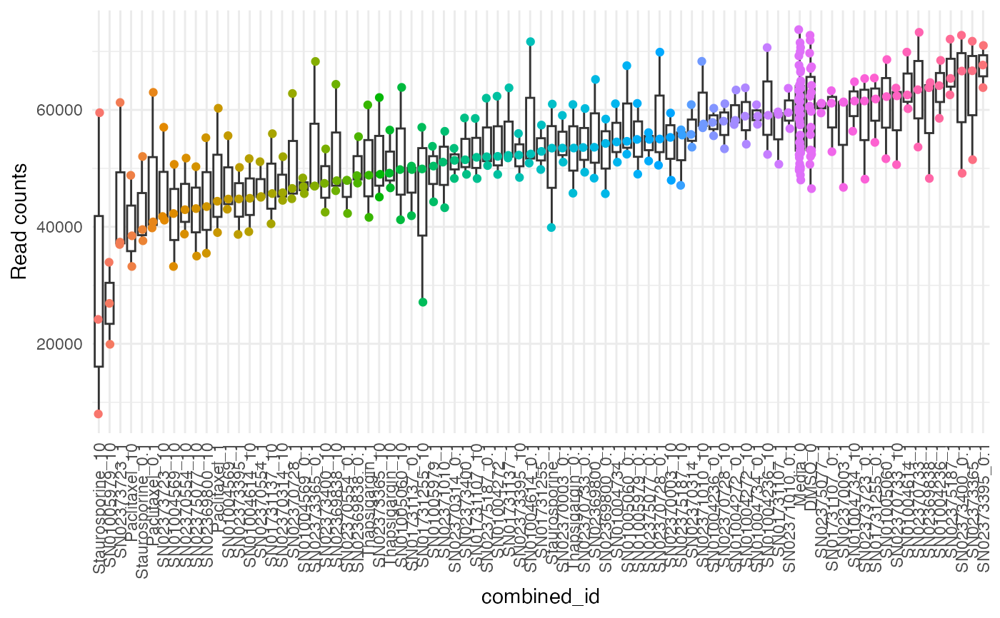
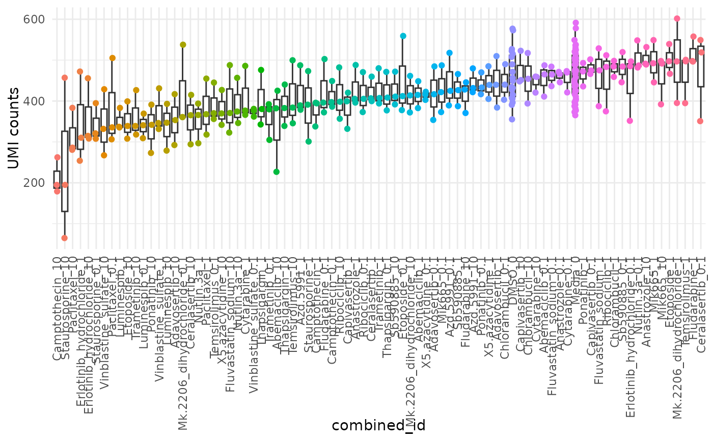

To calculate QC metrics such as standard deviation (sd), median absolute deviation (MAD), interquartile range (IQR), and Z score for read counts per condition/group of interest
compute_qc_metrics(data = NULL, group_by = NULL, order_by = NULL)a list with a data frame with QC metrics and a box plot showing read counts per condition
data(mini_mac)
compute_qc_metrics(data = mini_mac, group_by = "combined_id", order_by = "median")

#> $stats_summary
#> # A tibble: 83 × 6
#> combined_id sd_value mad_value group_median z_score IQR
#> <chr> <dbl> <dbl> <dbl> <dbl> <dbl>
#> 1 Abemaciclib_0.1 39.1 32.6 465 0.542 38
#> 2 Abemaciclib_1 32.5 47.4 415 -0.119 32.5
#> 3 Abemaciclib_10 104. 63.8 382 -0.555 99
#> 4 Adavosertib_0.1 65.5 93.4 417 -0.093 65.5
#> 5 Adavosertib_1 63.1 83.0 440 0.212 63
#> 6 Adavosertib_10 62.5 90.4 353 -0.939 62.5
#> 7 Anastrozole_0.1 13.2 7.41 466 0.555 12.5
#> 8 Anastrozole_1 50.7 13.3 405 -0.251 46
#> 9 Anastrozole_10 24.3 2.96 491 0.886 21.5
#> 10 Azd.5991_0.1 66.6 53.4 425 0.013 64.5
#> # ℹ 73 more rows
#>
#> $plot

#>